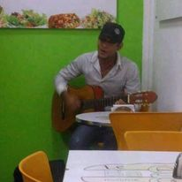
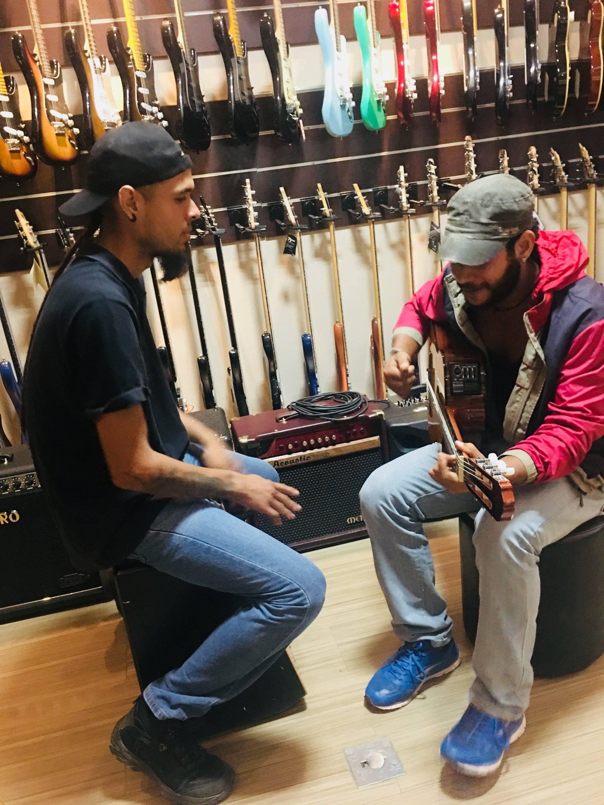
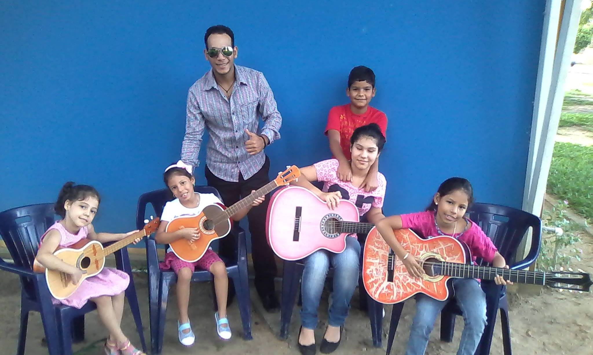
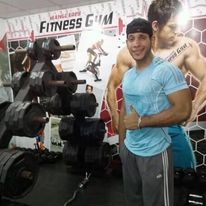

Luis G. Mendez M.
Estudante Front End Developer
A Minha Historia
Olá, eu sou Luis Mendez
Sou de Delta Amacuro ,um estado da Venezuela, um Estado muito lindo e de pessoas humildes e gentis. Ha 4 anos que vim embora para o Brasil, para poder obter uma melhora de vida e evoluir pessoalmente, foi um reto e foi muito dificil ter que sair da minha terra, mas a vida é isso (retos e constante evolução). Assim cheguei na fronteira Brasil/Venezuela em Roraima, andei varios Estados do norte de Brasil até chegar no rio de janeiro a onde moro atualmente, e depois de muitos trabalhos e servicios achei a oportunidade para me profissionalizar com a toti, no ramo da tegnologia, como programador front end, oportunidade que agradeço grandemente, embora que eu nunca me familiarizei com esta area, estou gostando muito tanto do conhecimento adquirido como os desafios que estou me encontrando na formatura, esperando com ansias trabalhar neste novo e magnifico mundo.
Formação
- Bacherelato em ciencias socias.
- Engenharia civil (no concluida) -Universidad IUTDELTA.
- Front end desenvolver-toti.
Experiencia
- Personal Trainer (musculação, nutrição, estetica) Periodo 2016-2020. Autonomo.
- Professor de Musica(Violão, e instrumentos tipicos da Venezuela) Periodo 2015-2018. Prefeitura de Tucupita - divisão de cultura.
- Churrasqueiro Chefe Periodo 2019-2022. Churrasqueira Rio.
Eu e o meu Violão
Foi quando tinha 15 anos de edade, que o meu irmao me presenteo o meu primeiro violão, naquela epoca eu tinha disfemia (tartamudo), uma alteracão da comunicação que afecta a fluides na fala, lembro que não foi facil nessa edade ter essa discapacidade,e emquanto eu fui aprendendo musica eu fui me curando daquele trastorno, por isso tenho dedicado parte da minha vida a musica, porque a musica do jeito que me curou, pode curar ao mundo todo.
  Bem-estar

sim voce quer contatar-me
e só deixar um mensagem